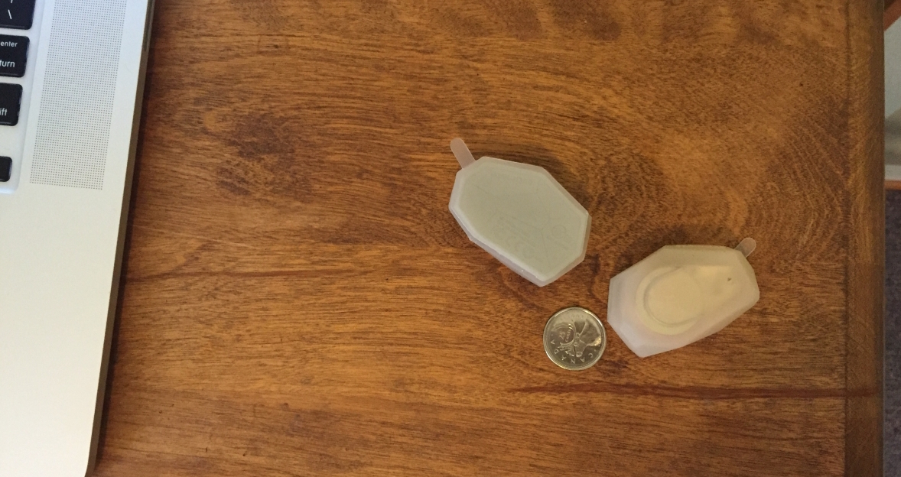
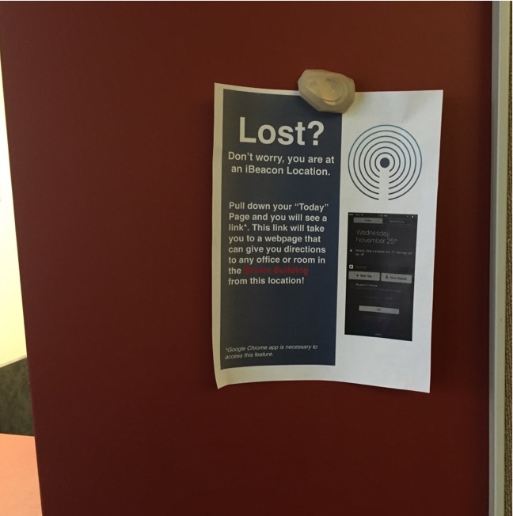
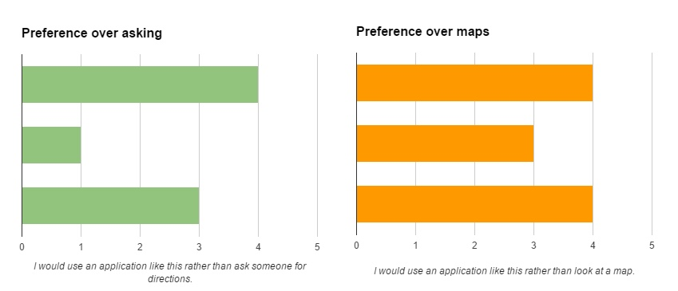
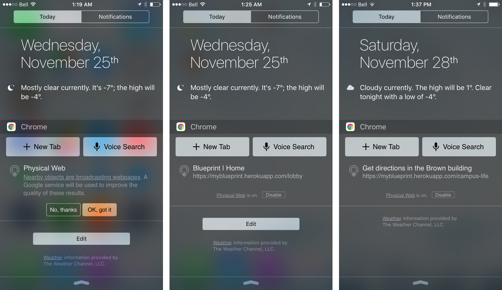
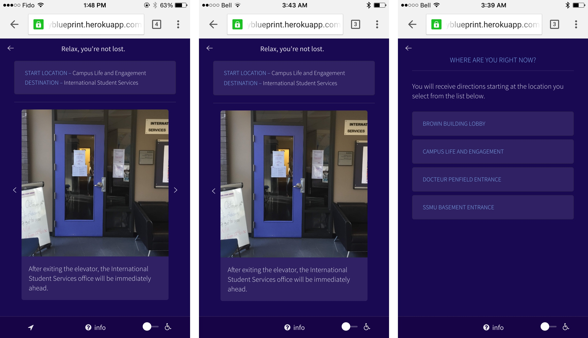
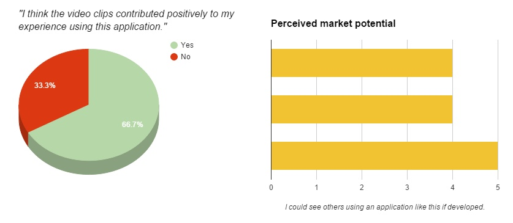

Introduction
Looking back on this year's theme "enhancing us as humans", and taking our initial project proposal into account, we believed that it was important to mimic the functionality of a ready-for-market product as much as possible. For this reason, we decided to implement the hardware component at this stage, using Estimote beacons to test two routes on 3 different users in the Brown building.
Configuring the beacons required minimal effort: we only needed to modify the Primary Packet Type of the beacons to "Eddystone-URL" then set this URL to a short-link that sends the user to the appropriate start location. We also enabled Google Chrome's Physical Web widget on the iPhone used for testing. The section that follows describes a summary of the tests conducted on our alpha-system.
Test procedure
As mentioned above, we conducted tests with a total of three users. Test subjects were only read the User Introduction and required to complete the pretest questionnaire before beginning the benchmark tasks–no further information was provided to them. A poster was also created to simulate the realistic use-case described in our project proposal. Despite only testing two of our routes, all benchmark tasks were evaluated.
We, the testers, timed the entire test in 'laps'. The first segment began after we described the problem to the test subject: "You would like to go to a resume review session." They were then pointed towards a poster attached to the wall at the entrance of the Brown building lobby. The time required to correctly find the Physical Web notification was documented. Then, one observer asked the user to describe the functionality they believed was available on the landing page of our application.
The second lap began when the test subject was instructed to "Get directions to the resume review session." This was the time required to navigate to room 3001, and observations were noted throughout navigation. When users reached the destination, they were asked to "imagine you are in a wheelchair", "find the nearest washroom", and "find room 4040". The user was not required to navigate to any of these locations, but the task was considered successful if they found the relevant functionality by clicking the correct button.
Room 3001 is immediately beside the Campus Life & Engagement Office, so the third lap started after the user was told to "Get directions to the International Student Services office." Observations were similarly noted throughout navigation.
Once this task was complete, we asked the user to return to the Lobby. Upon arrival, we had an informal discussion where they led the conversation and we only asked them to elaborate on personal opinions or actions/comments made while navigating. They filled out a post-test questionnaire before the test session ended.
Summary of test results for each benchmark test
| Benchmark task | Definition of success | Test results | Success? |
|---|---|---|---|
| Initiate navigation to specific event | Clicks the "Events" tab and selects the CAPS Resume Review session (within 5s) | One user clicked the info button before clicking the "Events" tab. | Somewhat* |
| Initiate navigation that is wheelchair-friendly | Clicks the wheelchair button knowing it is a switch enabling only disability routes (within 5s) | All users understood the toggle would enable wheelchair-friendly routes. | Yes |
| Initiate navigation to nearest bathroom | Clicks the "Restrooms" tab and the first item listed (within 5s) | All subjects clicked the closest washroom button (first in list). | Yes |
| Initiate navigation to specific room number | Clicks the search bar, and enters an appropriate query (within 5s) | All users immediately tried to search for room 4040. | Yes |
| Initiate navigation to Student Service office | Clicks the correct service button, knowing it will show them the route to that office (within 7s) | All users immediately clicked the Internation Services button on the "Services" tab while testing the 2nd route. | Yes |
| Navigate to destination | Users can successfully reach a specified destination (within 5 min) | All subjects were able to navigate to their destination without getting lost (route 1 avg: 1:29; route 2 avg: 1:04) | Yes |
| Navigate back to start location | Users can navigate back to the lobby without diverging from the correct path. | All users were able to navigate back to the lobby. | Yes |
Although all our benchmark tasks were met successfully, many usability problems were still brought to our attention by test subjects' comments and actions.
Observations
A summary of important observations, user comments, and failed usability goals are outlined in the table below.
| Observation | Test Subject Comments | Failed usability goals |
|---|---|---|
| Users struggled to find or understand the Physical Web notification. |
"I didn't know I had a Today page" – subject 1
"Bluprint Home... is this it?" – subject 3 |
#5 - The system should be generally acceptable among users. |
| Users were disoriented by the first instruction telling them their current location. |
"Oh, I have to turn this way." – subject 1
"That means my right is... no, that's left." – subject 2 |
#1 - The system should be effective as a wayfinding tool. |
| Some users were startled when gifs auto-played. |
"Ahhh!" – subject 2
"Whoah! ... Oh it replays." – subject 3 |
#5 - The system should be generally acceptable among users. |
| Users continued to click "next instruction" arrows at the last step. | not applicable | #2 - The system's functionality should be immediately understandable. |
| Some users asked about the prototype's "set current location" button. |
"What's this?" – subject 1
"Will this show me a map?" – subject 3 |
#2 - The system's functionality should be immediately understandable. |
Reactions to alpha system
Most users seemed to understand the basic layout of our home screen, and were able to identify most of the key functionality, see figure below. Gerenal comments about the interface was that it was nice, easy to understand, and gave a good overview, though there were also some negative comments, describing the interface as overwhelming. Several subjects mentioned that it was not clear exactly what would happen when they pressed the buttons on the home screen, and one subject noted that it was strange how the "events" is so close to the wheelchair and bathroom icons, asking what these things actually have in common.
In general, users seemed very pleased with our prototype. Several users mentioned that this would be a good alternative to traditional, map-based navigation. This user satisfaction was also represented in our post-test questionnaire, see figures below.

Design evolution
Content.
The changes we made are summarized below.
1. Update Blueprint "< title >" tag.
We decided to change the HTML title of the links from “Blueprint | Home” to “Get Directions in the Brown Building”. Our motive for this was to adhere more to Nielsen's heuristic, match between system and the real world. "Blueprint" is the name of our system, but this does not mean anything to our users, especially if they are lost. Furthermore, because iBeacons are relatively new technology and not implemented in everyday life, it is very likely that it will be a user's first time interacting with them. We believe "Get Directions in the Brown Building" is much more clear for potential users, thus minimizing their confusion.
2. Remove the first image describing the user's current location.
In our directions, we made it such that the first picture shown to the user was their current location. This caused confusion because users believed that it was an indication of the direction they should head, whereas it was only meant to reassure them that the system knew approximately where they were standing. It disoriented two test subjects as the next picture shown was actually facing a different direction in the second route.
To solve this issue, we removed the first picture in our instructions when they show a counterintuitive perspective with respect to the direction they need to go. This also relates to Nielsen's heuristic, match between system and the real world.
3. Ensure all GIFs have an accompanying photo.
Some individual steps, usually the physically longer ones, have accompanying gifs showing a fast-forwarded walkthrough of the step. Previously, we had several of these gifs running automatically. In observing our test subjects, we found that they were confused when the gif immediately played rather when they had the option to play it. For example, we noted that Test Subject #1 was stressed and found the gif too fast when one of the GIFs autostarted. This confusion perhaps stems from the looping nature of GIFs and not clearly seeing the starting and ending point. We decided to make all steps with GIFs cohesive in the sense that they all have a starting picture with a button on the bottom-right corner that launches the GIF.
- Flexibility and efficiency of use: .
- User control and freedom: .
4. Remove left arrow on first instruction and right arrow on last instruction.
During testing, two users clicked the right arrow button multiple times on the last step despite having reached their destination (see figure 1). They did this in both tasks that required using the system for wayfinding, assuming each time there was some type of lag. This is a usability issue in our interface as we are not giving appropriate feedback. Both users thought there was another direction because the button was fully clickable and its existence indicates that there is more for the user. To solve this issue, the right arrow button will be deleted from the last step from all directions (see figure 3).
- Visibility of system status: .
- Error prevention: .
A correlary to improving instructions is improving the user's awareness of where they are, currently, in the building. For this implementation of the prototype, we have also updated the "Current Location" label at the bottom of the screen, such that it now specifies that the user is in the Brown building.
5. Hide 'set current location' button.
In our system, the user isn't supposed to select their starting location because it is automatically generated using iBeacons. However, in our alpha system, after getting a lot of confusion in our formative feedback on how to select a starting location, we decided to add an update button which showed a menu of all the starting locations on the static bottom bar.
In our testing of the alpha system, none of the test subjects touched the update button or had a problem understanding that the iBeacon generated the starting location. We believe this understanding is due to the addition of this poster in our system. When we asked one of our test subject if they had any confusion with the iBeacons, they replied "Nope! The poster made it very clear". Since the confusion regarding how the starting location is set is no longer relevant, we decided to remove the update button. This relates to error prevention.
However, because this is still a prototype, the functionality of the button is still very useful in case testers forget or encounter difficulty using the beacons. For this reason, we decided to hide the button. Clicking on location of the button reveals the start location directory page, relating to Nielsen's help and documentation heuristic.
Prototype implementation (with revisions)
Our revised prototype is available here1, 2.
1. Please shrink your browser size down when viewing the web application on a desktop computer or laptop. Due to nature of our system, a desktop-friendly UI was not our priority.2. For a realistic experience, iPhones and either Google Chrome or Safari for browsing is best.
User manual (with revisions)
Documentation refinement
A few important changes were made to the user manual, and these relate to the addition of beacons and the poster. Most of the functionality of system did not change, but images were also updated. A summary of changes made to our user manual is outlined below.
- Beacon set-up instructions.
- A section now describes how to configure the iBeacons.
- Poster and beacon placement.
- A section now describes where to install beacons and posters.
- Images of various screens.
- The photos included accurately depict the current implementation of our prototype.
- Prototype limitations.
- The section was expanded to describe Physical Web requirement.
Appraisal of project success
The system's usability goals were quickly determined upon reexamination of our different audience segments. We justify the selected goals below.
- The system should be effective as a wayfinding tool.
- If the user is unable to navigate to their destination, the system immediately fails by not meeting the user's needs. If the user gets lost along the way or must revert back to classic navigation (i.e. maps or asking a person), the system holds no value.
- The system's functionality should be immediately understandable.
- Users, particularly those belonging to the Social Traveller segment, seem to have default mechanisms for wayfinding. If these users do not understand how to use the system at a glance, they will likely fall back to their old wayfinding methods.
- The system should be highly accessible to users with physical limitations.
- Particularly relevant to the Brown building because it houses Student Health Services, a highly accessible system is important. However, most locations in which an indoor navigation tool would be useful (museums and hospitals, for example) also require consideration to those who are handicapped.
- The system should be easily operable.
- If users are too focused on their interaction with our system, it creates a potentially dangerous situation given that they could be travelling down staircases, through crowds, or along slippery hallways. From our observations, the Independent Wanderers tend to study maps and information sources; we do not want these users getting injured as a biproduct of interaction with our system.
- The system should be generally acceptable among users.
- Because we believe an indoor navigation system should be transportable to different locations, low barriers to use are central to its success. The system is inherently not necessary, so users must see immediate benefit with very little effort.
Conclusion
The system's usability goals were quickly determined upon reexamination of our different audience segments. We justify the selected goals below.
